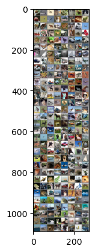

# etc
import os, sys, zipfile
import glob
import csv
import cv2
import tqdm
from typing import Tuple, List, Dict
import numpy as np
from PIL import Image
import matplotlib.pyplot as plt
# torch library
import torch
from torch import Tensor
import torch.nn as nn
import torch.nn.functional as F
from torch.utils.data import Dataset, DataLoader
from torch.utils.data.sampler import SubsetRandomSampler
# torchvision library
import torchvision
from torchvision import transforms, models
import torch.optim as optimCV_classification_0
- Import Library
- Dataset
# 데이터 전처리
train_transform = transforms.Compose(
[
transforms.RandomHorizontalFlip(),
#transforms.RandomChoice([
# transforms.ColorJitter(0.2, 0.2, 0.2, 0.2),
# transforms.RandomResizedCrop(224),
# transforms.RandomAffine(
# degrees=15, translate=(0.2, 0.2),
# scale = (0.8, 1.2), shear=15, resample=Image.BILINEAR)
#]),
transforms.ToTensor(),
transforms.Normalize((0.5, 0.5, 0.5), (0.5, 0.5, 0.5))
]
)
val_transform = transforms.Compose(
[
transforms.ToTensor(),
transforms.Normalize((0.5, 0.5, 0.5), (0.5, 0.5, 0.5))
]
)
# 배치 사이즈와 train:validation 비율 정의
batch_size = 256
val_size = 0.2
# torchvision에서 제공하는 CIFAR10 학습 데이터셋 다운로드
train_dataset = torchvision.datasets.CIFAR10(root='./data', train=True,
download=True, transform=train_transform)
val_dataset = torchvision.datasets.CIFAR10(root='./data', train=True,
download = True, transform=val_transform)
# train 데이터에서 일정 비율 validation data 분리
num_train = len(train_dataset)
indices = list(range(num_train))
split = int(np.floor(val_size * num_train))
train_idx, val_idx = indices[split:], indices[:split]
train_sampler = SubsetRandomSampler(train_idx)
val_sampler = SubsetRandomSampler(val_idx)
# 데이터로더 정의
train_loader = torch.utils.data.DataLoader(train_dataset, batch_size=batch_size,
sampler=train_sampler, num_workers=2)
val_loader = torch.utils.data.DataLoader(val_dataset, batch_size=batch_size,
sampler=val_sampler, num_workers=2)
# torchvision에서 제공하는 CIFAR10 테스트 데이터셋 다운로드
test_dataset = torchvision.datasets.CIFAR10(root='./data', train=False,
download=True, transform=val_transform)
test_loader = torch.utils.data.DataLoader(test_dataset, batch_size=batch_size,
shuffle=False, num_workers=2)
# 클래스 정의
classes = ('plane', 'car', 'bird', 'cat','deer', 'dog', 'frog', 'horse', 'ship', 'truck')Files already downloaded and verified
Files already downloaded and verified
Files already downloaded and verified# 데이터셋 확인
train_datasetDataset CIFAR10
Number of datapoints: 50000
Root location: ./data
Split: Train
StandardTransform
Transform: Compose(
RandomHorizontalFlip(p=0.5)
ToTensor()
Normalize(mean=(0.5, 0.5, 0.5), std=(0.5, 0.5, 0.5))
)# 이미지 데이터 시각화
def imshow(img):
img = img / 2 + 0.5
npimg = img.numpy()
plt.imshow(np.transpose(npimg, (1, 2, 0)))
plt.show()
# 학습 이미지 얻기
dataiter = iter(train_loader)
images, labels = next(dataiter)
# 이미지 출력
imshow(torchvision.utils.make_grid(images))
# 라벨 프린트
print(' '.join(f'{classes[labels[j]]:5s}' for j in range(batch_size)))
cat plane plane cat frog dog deer dog car bird plane dog ship deer frog frog horse cat horse truck frog horse car plane ship frog horse frog bird horse plane truck frog frog deer dog plane car plane truck car dog frog deer cat frog bird ship dog ship frog plane plane ship bird car car cat cat horse truck ship ship plane car truck plane dog cat deer ship dog plane frog horse cat dog bird plane bird dog ship ship truck bird horse horse plane truck bird horse deer deer deer horse horse dog ship ship ship cat truck deer dog deer dog plane cat cat bird car car horse deer plane truck bird plane ship deer ship truck dog horse ship deer cat truck deer dog ship frog dog car car plane deer dog plane horse dog truck bird dog deer bird bird bird dog car dog plane deer horse plane truck car plane bird frog plane frog truck truck bird bird cat dog bird dog car horse cat car frog ship truck frog cat horse plane ship horse car cat cat horse ship truck dog frog plane horse plane deer frog ship cat plane cat frog car bird horse truck dog plane horse plane frog truck ship cat bird frog plane ship bird frog car frog truck bird ship horse horse ship bird plane horse bird cat car car dog frog bird deer car ship frog truck ship cat truck ship ship dog ship plane frog dog dog car plane car # 테스트를 위한 Custom Dataset 다운로드
!wget https://drive.google.com/uc?id=1GTES_wxB8b-jsZIqHgNyV9pEgpMLtfzc--2024-02-05 04:58:20-- https://drive.google.com/uc?id=1GTES_wxB8b-jsZIqHgNyV9pEgpMLtfzc
Resolving drive.google.com (drive.google.com)... 172.217.161.206, 2404:6800:400a:80b::200e
Connecting to drive.google.com (drive.google.com)|172.217.161.206|:443... connected.
HTTP request sent, awaiting response... 303 See Other
Location: https://drive.usercontent.google.com/download?id=1GTES_wxB8b-jsZIqHgNyV9pEgpMLtfzc [following]
--2024-02-05 04:58:21-- https://drive.usercontent.google.com/download?id=1GTES_wxB8b-jsZIqHgNyV9pEgpMLtfzc
Resolving drive.usercontent.google.com (drive.usercontent.google.com)... 142.250.207.97, 2404:6800:400a:805::2001
Connecting to drive.usercontent.google.com (drive.usercontent.google.com)|142.250.207.97|:443... connected.
HTTP request sent, awaiting response... 200 OK
Length: 77122 (75K) [application/octet-stream]
Saving to: ‘uc?id=1GTES_wxB8b-jsZIqHgNyV9pEgpMLtfzc.1’
uc?id=1GTES_wxB8b-j 100%[===================>] 75.31K --.-KB/s in 0.1s
2024-02-05 04:58:22 (506 KB/s) - ‘uc?id=1GTES_wxB8b-jsZIqHgNyV9pEgpMLtfzc.1’ saved [77122/77122]
# 파일 압축 해제
with zipfile.ZipFile("03_classification_custom_dataset.zip", 'r') as zip_ref:
zip_ref.extractall("03_classification_custom_dataset")for folder in os.listdir('03_classification_custom_dataset/custom_dataset'):
print(folder)plane
dog
.DS_Store
cat
bird
car# 커스텀 데이터셋 클래스
class CUSTOMDataset(Dataset):
def __init__(self, mode: str = 'test', transforms: transforms = None):
self.mode = mode
self.transforms = transforms
self.images = []
self.labels = []
for folder in os.listdir('03_classification_custom_dataset/custom_dataset'):
files = os.path.join('03_classification_custom_dataset/custom_dataset',folder)
if folder == '.DS_Store':
continue
files_path = os.listdir(files)
for file in files_path:
self.images.append(os.path.join(files,file))
self.labels.append(classes.index(folder))
def __len__(self):
return len(self.labels)
def __getitem__(self, index: int) -> Tuple[Tensor]:
image = Image.open(self.images[index]).convert('RGB')
if self.transforms is not None:
image = self.transforms(image)
image = np.array(image)
label = self.labels[index]
return image, label
# 커스텀 데이터셋 & 로더
custom_dataset = CUSTOMDataset('test', transforms = val_transform)
custom_loader = DataLoader(
custom_dataset, batch_size=16, shuffle=False, num_workers=2
)- 모델 불러오기
# 디바이스 체그 & 할당
device = torch.device('cuda' if torch.cuda.is_available() else 'cpu')
print(device)cudamodel = torch.hub.load('pytorch/vision:v0.10.0', 'resnet101', pretrained=True)
model = model.to(device)Using cache found in /root/.cache/torch/hub/pytorch_vision_v0.10.0- 로스 함수와 옵티마이저 정의
criterion = nn.CrossEntropyLoss()
optimizer = optim.SGD(model.parameters(), lr=0.001, momentum=0.9)- 학습, 검증, 테스트 메소드 정의
def train(epoch):
train_loss = 0.0
model.train()
for i, data in enumerate(tqdm.tqdm(train_loader), 0):
# 입력 데이터 가져오기 data: [inputs, labels]
inputs, labels = data[0].to(device), data[1].to(device)
# parameter gradients를 제로화
optimizer.zero_grad()
# 입력 이미지에 대한 출력 생성
outputs = model(inputs)
# 손실함수 계산 및 업데이트
loss = criterion(outputs, labels)
loss.backward()
optimizer.step()
train_loss += loss.item()
return train_lossdef val():
val_loss = 0.0
val_accuracy = 0.0
with torch.no_grad():
# 모델 평가 모드 설정
model.eval()
for i, data in enumerate(tqdm.tqdm(val_loader), 0):
# 입력 데이터 가져오기 data: [inputs, labels]
inputs, labels = data[0].to(device), data[1].to(device)
# 입력 이미지에 대한 출력 생성
outputs = model(inputs)
# 손실함수 계산
loss = criterion(outputs, labels)
val_loss += loss.item()
# 예측 라벨
_, predicted = torch.max(outputs, 1)
# accuracy 계산
val_accuracy += (predicted == labels).sum().item()
return val_loss, val_accuracydef test(test_loader):
correct = 0
total = 0
correct_class = {classname:0 for classname in classes}
total_class = {classname: 0 for classname in classes}
model.eval()
with torch.no_grad():
for data in test_loader:
inputs, labels = data[0].to(device), data[1].to(device)
# 입력 이미지에 대한 출력 생성
outputs = model(inputs)
# 예측 라벨
_, predicted = torch.max(outputs.data, 1)
# 전체 정확도 계산
total += labels.size(0)
correct += (predicted == labels).sum().item()
# 클래스 별 정확도 계산
for label, prediction in zip(labels, predicted):
if label == prediction:
correct_class[classes[label]] += 1
total_class[classes[label]] += 1
# 전체 정확도 출력
print(f'Accuracy of the network on the 10000 test images: {100*correct//total}%')
# 클래스 별 정확도 출력
for classname, correct_count in correct_class.items():
if total_class[classname] == 0:
continue
accuracy = 100*float(correct_count) / total_class[classname]
print(f'Accuracy for class: {classname:5s} is {accuracy:.1f}%')- 학습
# 학습 epoch 설정
train_epochs = 20
best_acc = 0.0
# 모델 저장 경로 정의
model_path = './cifar_resnet.pth'
for epoch in range(train_epochs):
# 학습 메소드 실행
train_loss = train(epoch)
print(f'[{epoch+1}] loss: {train_loss / len(train_loader):.3f}')
# 검증 메소드 실행
val_loss, val_acc = val()
valid_acc = val_acc / (len(val_loader)*batch_size)
print(f'[{epoch+1}] loss: {val_loss/len(val_loader):.3f} acc:{valid_acc:.3f}')
# 정확도가 기존 베스트를 갱신할 경우 모델 저장
if valid_acc >= best_acc:
best_acc = valid_acc
torch.save(model.state_dict(), model_path)
print('Done!!')100%|█████████████████████████████████████████████████████████████████████████████████| 157/157 [00:18<00:00, 8.40it/s]
100%|███████████████████████████████████████████████████████████████████████████████████| 40/40 [00:03<00:00, 12.78it/s]
100%|█████████████████████████████████████████████████████████████████████████████████| 157/157 [00:16<00:00, 9.41it/s]
100%|███████████████████████████████████████████████████████████████████████████████████| 40/40 [00:02<00:00, 13.88it/s]
100%|█████████████████████████████████████████████████████████████████████████████████| 157/157 [00:15<00:00, 10.06it/s]
100%|███████████████████████████████████████████████████████████████████████████████████| 40/40 [00:03<00:00, 13.33it/s]
100%|█████████████████████████████████████████████████████████████████████████████████| 157/157 [00:15<00:00, 10.16it/s]
100%|███████████████████████████████████████████████████████████████████████████████████| 40/40 [00:03<00:00, 12.92it/s]
100%|█████████████████████████████████████████████████████████████████████████████████| 157/157 [00:15<00:00, 10.40it/s]
100%|███████████████████████████████████████████████████████████████████████████████████| 40/40 [00:02<00:00, 13.92it/s]
100%|█████████████████████████████████████████████████████████████████████████████████| 157/157 [00:13<00:00, 11.23it/s]
100%|███████████████████████████████████████████████████████████████████████████████████| 40/40 [00:03<00:00, 13.26it/s]
100%|█████████████████████████████████████████████████████████████████████████████████| 157/157 [00:13<00:00, 11.37it/s]
100%|███████████████████████████████████████████████████████████████████████████████████| 40/40 [00:02<00:00, 16.28it/s]
100%|█████████████████████████████████████████████████████████████████████████████████| 157/157 [00:13<00:00, 11.61it/s]
100%|███████████████████████████████████████████████████████████████████████████████████| 40/40 [00:02<00:00, 13.54it/s]
100%|█████████████████████████████████████████████████████████████████████████████████| 157/157 [00:13<00:00, 11.49it/s]
100%|███████████████████████████████████████████████████████████████████████████████████| 40/40 [00:02<00:00, 13.96it/s]
100%|█████████████████████████████████████████████████████████████████████████████████| 157/157 [00:13<00:00, 11.89it/s]
100%|███████████████████████████████████████████████████████████████████████████████████| 40/40 [00:02<00:00, 13.95it/s]
100%|█████████████████████████████████████████████████████████████████████████████████| 157/157 [00:14<00:00, 10.85it/s]
100%|███████████████████████████████████████████████████████████████████████████████████| 40/40 [00:02<00:00, 13.73it/s]
100%|█████████████████████████████████████████████████████████████████████████████████| 157/157 [00:13<00:00, 11.81it/s]
100%|███████████████████████████████████████████████████████████████████████████████████| 40/40 [00:02<00:00, 14.84it/s]
100%|█████████████████████████████████████████████████████████████████████████████████| 157/157 [00:13<00:00, 11.24it/s]
100%|███████████████████████████████████████████████████████████████████████████████████| 40/40 [00:02<00:00, 14.87it/s]
100%|█████████████████████████████████████████████████████████████████████████████████| 157/157 [00:13<00:00, 11.55it/s]
100%|███████████████████████████████████████████████████████████████████████████████████| 40/40 [00:02<00:00, 14.24it/s]
100%|█████████████████████████████████████████████████████████████████████████████████| 157/157 [00:14<00:00, 11.16it/s]
100%|███████████████████████████████████████████████████████████████████████████████████| 40/40 [00:03<00:00, 13.24it/s]
100%|█████████████████████████████████████████████████████████████████████████████████| 157/157 [00:16<00:00, 9.61it/s]
100%|███████████████████████████████████████████████████████████████████████████████████| 40/40 [00:02<00:00, 13.80it/s]
100%|█████████████████████████████████████████████████████████████████████████████████| 157/157 [00:17<00:00, 8.87it/s]
100%|███████████████████████████████████████████████████████████████████████████████████| 40/40 [00:02<00:00, 13.50it/s]
100%|█████████████████████████████████████████████████████████████████████████████████| 157/157 [00:15<00:00, 10.11it/s]
100%|███████████████████████████████████████████████████████████████████████████████████| 40/40 [00:02<00:00, 15.18it/s]
100%|█████████████████████████████████████████████████████████████████████████████████| 157/157 [00:15<00:00, 10.27it/s]
100%|███████████████████████████████████████████████████████████████████████████████████| 40/40 [00:03<00:00, 13.19it/s]
100%|█████████████████████████████████████████████████████████████████████████████████| 157/157 [00:16<00:00, 9.69it/s]
100%|███████████████████████████████████████████████████████████████████████████████████| 40/40 [00:03<00:00, 11.73it/s][1] loss: 0.581
[1] loss: 0.673 acc:0.754
[2] loss: 0.452
[2] loss: 0.662 acc:0.760
[3] loss: 0.353
[3] loss: 0.648 acc:0.773
[4] loss: 0.263
[4] loss: 0.693 acc:0.773
[5] loss: 0.204
[5] loss: 0.745 acc:0.776
[6] loss: 0.162
[6] loss: 0.762 acc:0.769
[7] loss: 0.131
[7] loss: 0.781 acc:0.776
[8] loss: 0.093
[8] loss: 0.875 acc:0.777
[9] loss: 0.080
[9] loss: 0.899 acc:0.777
[10] loss: 0.064
[10] loss: 0.884 acc:0.781
[11] loss: 0.053
[11] loss: 0.950 acc:0.776
[12] loss: 0.047
[12] loss: 0.960 acc:0.781
[13] loss: 0.039
[13] loss: 0.964 acc:0.781
[14] loss: 0.032
[14] loss: 0.955 acc:0.785
[15] loss: 0.026
[15] loss: 1.009 acc:0.780
[16] loss: 0.028
[16] loss: 1.056 acc:0.782
[17] loss: 0.028
[17] loss: 0.996 acc:0.786
[18] loss: 0.026
[18] loss: 1.004 acc:0.788
[19] loss: 0.023
[19] loss: 1.029 acc:0.785
[20] loss: 0.019
[20] loss: 1.042 acc:0.785
Done!!- 모델 성능 평가
커스텀 데이터셋 테스트
model_path = 'cifar_resnet.pth'
# 모델 가중치 업로드
model.load_state_dict(torch.load(model_path))
# 테스트
test(custom_loader)Accuracy of the network on the 10000 test images: 68%
Accuracy for class: plane is 100.0%
Accuracy for class: car is 60.0%
Accuracy for class: bird is 40.0%
Accuracy for class: cat is 80.0%
Accuracy for class: dog is 60.0%테스트 데이터셋 테스트
model_path = 'cifar_resnet.pth'
# 모델 가중치 업로드
model.load_state_dict(torch.load(model_path))
test(test_loader)Accuracy of the network on the 10000 test images: 80%
Accuracy for class: plane is 85.0%
Accuracy for class: car is 88.0%
Accuracy for class: bird is 75.9%
Accuracy for class: cat is 62.5%
Accuracy for class: deer is 77.1%
Accuracy for class: dog is 71.7%
Accuracy for class: frog is 85.6%
Accuracy for class: horse is 84.0%
Accuracy for class: ship is 84.6%
Accuracy for class: truck is 85.7%